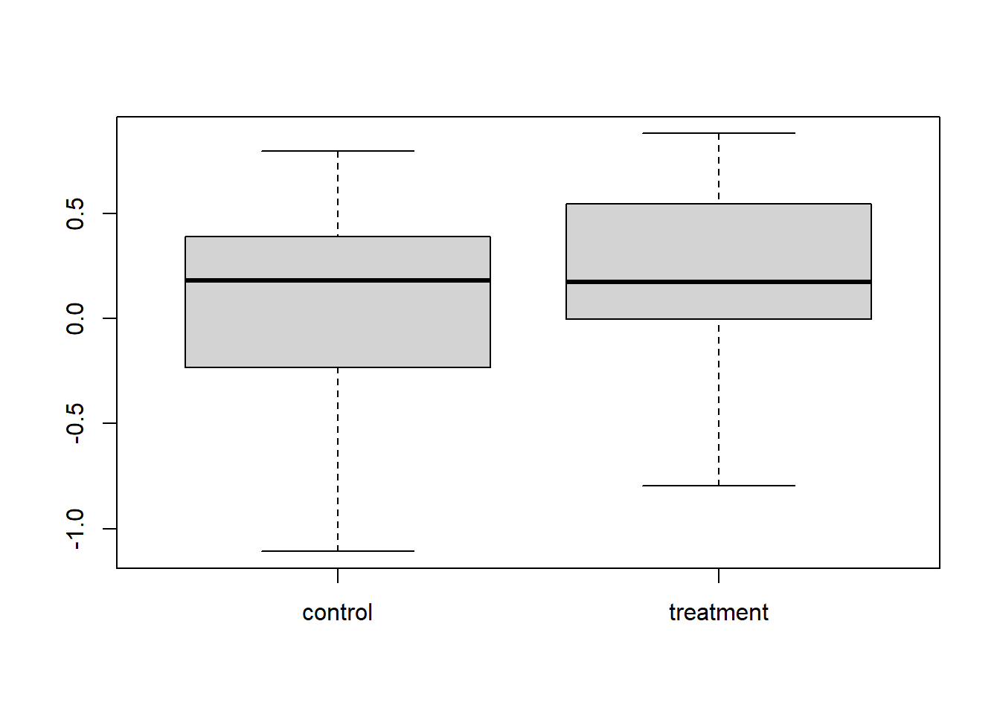
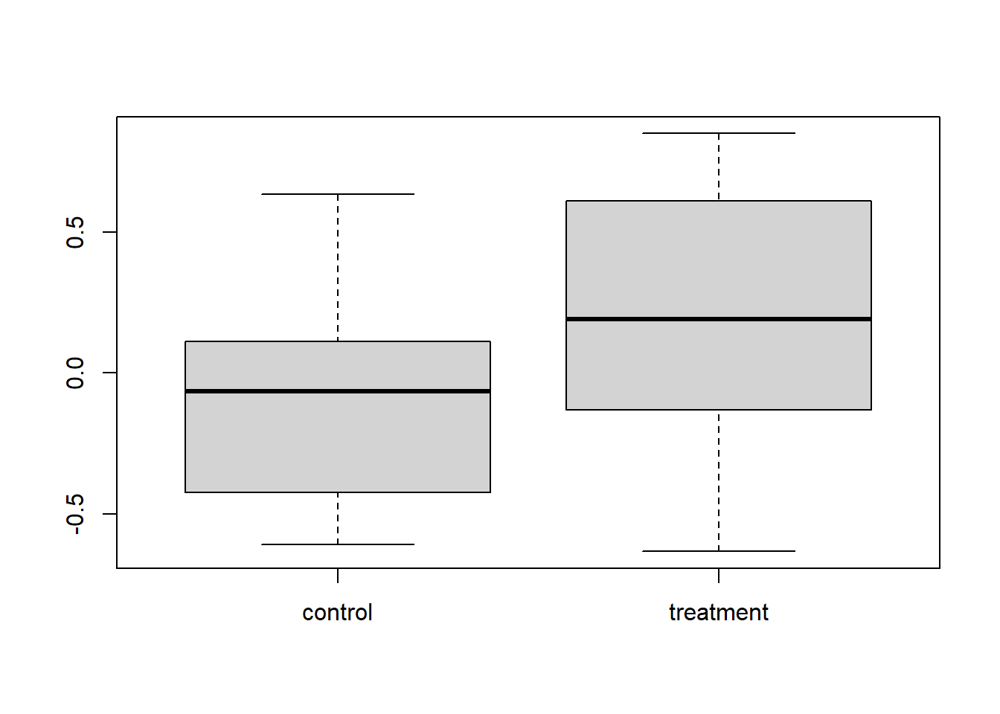
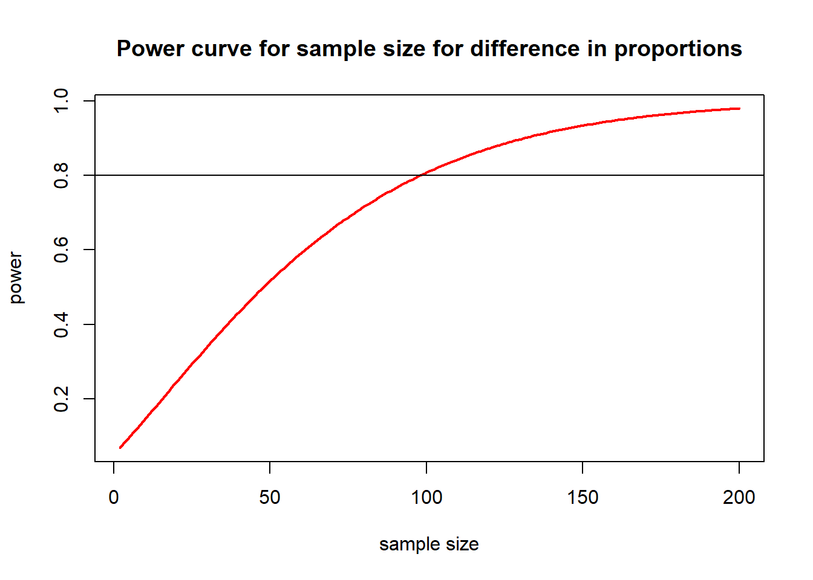

You collect data to answer a question, usually with the aim of detecting a particular effect (e.g., treatment effect). The power of your test is the probability of detecting an effect (i.e., getting a p-value < 0.05) with the experimental design you have and the effect size that you expect or consider meaningful.
I’ll start by simulating a dataset which has an effect (a difference between the control and treatment), and we’ll see if we can detect the effect. We’ll do a simple two sample t-test for illustration.
set.seed(1)
N <- 20 # the sample size
trt.effect <- 0.2 # difference between control and treatment means
sigma <- 0.5 # standard deviation of control and treatment groups
mean.con <- 0 # mean of control group
mean.trt <- mean.con + trt.effect # mean of treatment group
control <- rnorm(N, mean.con, sigma) # 20 data points for the control group taken from a normal distribution with known sample size, mean and s.d.
treatment <- rnorm(N, mean.trt, sigma) # data for the treatment group
t.test(control, treatment)##
## Welch Two Sample t-test
##
## data: control and treatment
## t = -0.71923, df = 37.917, p-value = 0.4764
## alternative hypothesis: true difference in means is not equal to 0
## 95 percent confidence interval:
## -0.3872163 0.1842117
## sample estimates:
## mean of x mean of y
## 0.09526194 0.19676424We can view the differences between the groups with a boxplot and test for those differences with a t-test:
boxplot(cbind(control, treatment))
t.test(control, treatment)##
## Welch Two Sample t-test
##
## data: control and treatment
## t = -0.71923, df = 37.917, p-value = 0.4764
## alternative hypothesis: true difference in means is not equal to 0
## 95 percent confidence interval:
## -0.3872163 0.1842117
## sample estimates:
## mean of x mean of y
## 0.09526194 0.19676424We know there is an effect of treatment, with effect size 0.2, but the test was not able to detect it.This is known as a type II error. Let’s redo the same experiment with exactly the same setup.
#
set.seed(3)
N <- 20
trt.effect <- 0.2
sigma <- 0.5
mean.con <- 0
mean.trt <- mean.con + trt.effect
control <- rnorm(N, mean.con, sigma)
treatment <- rnorm(N, mean.trt, sigma)
boxplot(cbind(control, treatment))
t.test(control, treatment)##
## Welch Two Sample t-test
##
## data: control and treatment
## t = -2.3471, df = 37.416, p-value = 0.02432
## alternative hypothesis: true difference in means is not equal to 0
## 95 percent confidence interval:
## -0.57817515 -0.04253493
## sample estimates:
## mean of x mean of y
## -0.08359522 0.22675982This time we did detect an effect. This always happens, no matter what your experimental design, if an effect is present, you have some chance of detecting it, this is called power. So as not to waste time and money, we should only conduct experiments that have high power, i.e. high probability of detecting an effect if there is one. We can calculate the power of this experiment.
There are various packages which do power analysis in R. pwr
does simple stuff up to lm and simR
does more complex mixed models and glms.
First, download and install the package.
library(pwr)To do power calculations in pwr, you leave one of the values as NULL and enter all the others. It then gives you the value for the one you left out.
Here I will use the function pwr.t.test and leave out
power. It will calculate the power for the experimental design givne the
specified sample size and effect size. Be careful; the d variable, which
in the help file is called the effect size, is our treatment effect
(difference between means) divided by the standard deviation.
pwr.t.test(n = 20, d = trt.effect / sigma, sig.level = 0.05, power = NULL)##
## Two-sample t test power calculation
##
## n = 20
## d = 0.4
## sig.level = 0.05
## power = 0.2343494
## alternative = two.sided
##
## NOTE: n is number in *each* groupWhoops, power is only about 25%. This means that given the effect we expect, and with this sample size, we will only detect that effect 25% of the time. So, it’s probably not worth doing this experiment. We could increase the sample size to increase power.
We can now use our power calculations to find out what sample size will give us good power, where 80% is the usual cutoff. We redo the calculation but now with N left blank and power = 0.8.
pwr.t.test(n = NULL, d = trt.effect / sigma, sig.level = 0.05, power = 0.8)##
## Two-sample t test power calculation
##
## n = 99.08032
## d = 0.4
## sig.level = 0.05
## power = 0.8
## alternative = two.sided
##
## NOTE: n is number in *each* groupThis tells us that to we need a sample size (for each group) of 100 to achieve 80% power of detecting our effect. This is obviously important to know if replicate measures are expensive or time consuming to collect.
We can also plot power for various sample sizes. Here is some code that calculates and plots power for samples sizes from 2 to 200.
nvals <- seq(2, 200, length.out = 200)
powvals <- sapply(nvals, function(x) pwr.2p.test(h = trt.effect / sigma, n = x, sig.level = 0.05)$power)
plot(nvals, powvals,
xlab = "sample size", ylab = "power",
main = "Power curve for sample size for difference in proportions",
lwd = 2, col = "red", type = "l"
)
abline(h = 0.8)
The pwr package has a bunch of functions, but they all pretty much work the same way.
| Function | Description |
|---|---|
pwr.2p.test |
two proportions (equal n) |
pwr.2p2n.test |
two proportions (unequal n) |
pwr.anova.test |
balanced one way ANOVA |
pwr.chisq.test |
chi-square test |
pwr.f2.test |
general linear model |
pwr.p.test |
proportion (one sample) |
pwr.r.test |
correlation |
pwr.t.test |
t-tests (one sample, 2 sample, paired) |
pwr.t2n.test |
t-test (two samples with unequal n) |
It is generally a bit tricky to specify effect size, you can find a good guide for this package here.
Note that specifying effect size is not a statistical question, it’s an ecological question of what effect size is meaningful for your particular study? For example, do you want to be able to detect a 10% decline in the abundance of a rare animal or would you be happy with a sampling design able to detect a 25% decline?
Source Licensed under a Creative Commons Attribution-ShareAlike 4.0 International License
Adapted from EnvironmentalComputing https://github.com/nicercode/EnvironmentalComputing